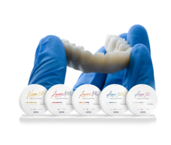

لماذا تختار لازورد؟
لأن لازورد يجمع بين التكنولوجيا الرقمية، الدقة المخبرية، وسهولة التواصل لمساعدة عيادات الأسنان على تقديم نتائج أسرع وأكثر موثوقية.
شريك رقمي متكامل لعيادتك
في عالم طب الأسنان الحديث، لم يعد التواصل التقليدي مع المختبر كافيًا. لذلك يوفر لازورد تجربة رقمية تساعد الطبيب على إرسال الحالات، متابعة الطلبات، مراجعة التصاميم، والتعاون مع المختبر بطريقة أسرع وأسهل.

ما الذي يميز لازورد؟
دقة أعلى
يساعد سير العمل الرقمي على تقليل الأخطاء وتحسين جودة النتائج من خلال استخدام المسح والتصميم الرقمي.
تواصل أسرع
يمكن للطبيب متابعة الحالة والتواصل مع المختبر بشكل أوضح، مما يقلل التأخير وسوء الفهم.
تجربة أفضل للمريض
عندما تكون الإجراءات أسرع وأكثر دقة، يحصل المريض على تجربة علاجية أكثر راحة وثقة.
متابعة الحالة بسهولة
تستطيع العيادة معرفة مرحلة العمل على الحالة بدل انتظار الردود التقليدية أو المكالمات المتكررة.
كيف يساعدك لازورد؟
إرسال الحالة رقميًا من العيادة إلى المختبر.
مراجعة التصميمات والموافقة عليها قبل التصنيع.
متابعة حالة الطلب في الوقت الفعلي.
تسليم نتائج أكثر دقة خلال وقت أقل.